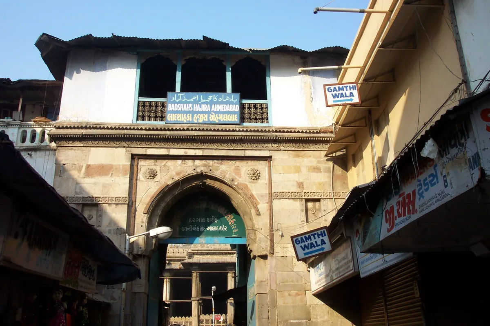

Badshah no Haziro: A Respectful Guide to Ahmedabad’s Royal Mausoleum

A monument that remains a sacred place
Badshah no Haziro, also identified as the mausoleum of Sultan Ahmed Shah, is reached from the Manek Chowk area beside Jama Masjid. Ahmedabad Municipal Corporation’s heritage portal describes a domed building with porticoes, a southern entrance and a passage to the marble tomb of the city’s founder. Flowers and chaddars are still offered, so the complex should be understood as a living place of remembrance rather than only an architectural exhibit. That distinction should shape every choice a visitor or creator makes inside and around it.
Read the building in layers
Begin outside by noticing how the entrance sits within the dense lanes of the historic core. Inside permitted areas, look for the transition from bright street to shaded portico, the central dome, smaller corner chambers and the filtered light of carved stone screens. The municipal description specifically highlights jalis and the craft skill visible in the walls. Record those elements without touching stone, leaning equipment on a surface or entering a closed space. If an object, tomb or inscription is not clearly identified by an authoritative source, describe what is visible instead of assigning a story to it.
Follow the customs you find
Treat posted directions and instructions from caretakers as the current authority. Dress modestly, keep your voice low and do not interrupt prayer, offerings or a family’s private moment. Ask before photographing inside, because permission can differ by area and occasion. A phone camera being technically possible does not make every frame appropriate. Avoid stepping between a person and a tomb, moving offerings for a cleaner composition or using a bright light that changes the atmosphere. If photography is declined, put the device away without argument.
Plan a compact heritage circuit
The municipal heritage directory places Jama Masjid, Manek Chowk, Rani no Haziro and Fernandes Bridge book market nearby. Choose only a few stops and allow time for walking, traffic and observation. A coherent route could compare Badshah no Haziro with Rani no Haziro, then finish at Manek Chowk; another could connect the mausoleum with Jama Masjid and the book market. Confirm current access and street conditions on the day. Do not reuse an old timetable or present a suggested route as a guaranteed guided service.
Separate history from local tradition
A responsible caption identifies which details come from the municipal heritage record and which are local practices or oral accounts. The long-running naubat music associated with the entrance is mentioned on the official Manek Chowk heritage page, but a creator should still record what they actually witnessed rather than implying attendance. Note the filming date and avoid phrases such as ‘hidden tomb’ or ‘secret ritual.’ Badshah no Haziro is an established and respected site whose value does not depend on exaggerated discovery language.
Build a respectful short-form story
Open with the surrounding lane to orient viewers, show the entrance and one or two architectural details, then explain that the mausoleum remains a place of offering and remembrance. Use ambient audio only when it does not capture private conversation or worship without consent. Credit the heritage source and the photographer of any licensed image. A useful reel should leave viewers knowing where the place sits in Ahmedabad’s historic core, what to observe and how to behave—not merely give them a dramatic backdrop.